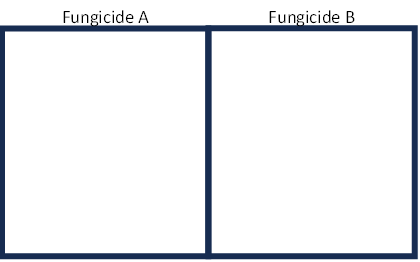
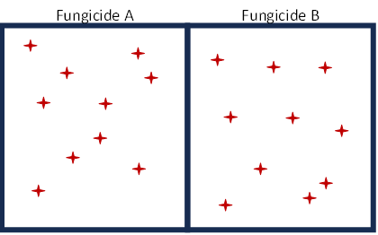

| replicate | fungicide | yield |
|---|---|---|
| 1 | A | 501 |
| 2 | A | 507 |
| 3 | A | 482 |
| 4 | A | 522 |
| 5 | A | 498 |
| 6 | A | 487 |
| 7 | A | 497 |
| 8 | A | 501 |
| 9 | A | 500 |
| 10 | A | 442 |
| 1 | B | 506 |
| 2 | B | 536 |
| 3 | B | 514 |
| 4 | B | 516 |
| 5 | B | 510 |
| 6 | B | 524 |
| 7 | B | 519 |
| 8 | B | 504 |
| 9 | B | 499 |
| 10 | B | 539 |
Introduction to Nested Designs
Building on the Complete Block Design
The Split Plot, or Repeated Measures design is very similar to the Complete Block design, CB[1], with an extra wrinkle. Namely, an additional factor, referred to as the between-block factor, is added to the design. In the Complete Block design, blocks all come from the same population. In this new design, blocks can be assigned to different treatments (or for an observational factor, each block belongs to a different group). Thus, each level of the block factor is nested inside of the between-block factor; as a result, we often call these types of designs “nested designs”.
An example can make this more clear. Let’s start with a Complete Block experiment we are already familiar with…(wait for it)…the toothbrush example! Recall that a Complete Block design was described in detail on the Complete Block page. In summary, in that complete block design each person used each of the toothbrushes for a period of time. The order in which the brushes were used was randomized within each individual person.
But what if each block is different in some way? How can variation in the response due to different types of blocks be accounted for. For example, maybe some of the blocks (people) are adults and some are children. I may be interested in understanding how each brush performs in the two populations. I could even investigate the interaction of brush with age. For example, if one of the brushes performs better with children than with adults, I may want to market the brush as a children’s brush. In this case, “adult” and “child” are levels of the age factor, which is called a between-block factor.
Between-block factors are not always observational factors, they can be experimental factors too (i.e. factors whose levels can be assigned). For example, in the toothbrush study, instead of comparing adults to children you may just be studying adults. You could randomly assign one set of people to floss and one group to not floss. Or, each person (block) may be assigned to eat a specific diet: protein vs. vegan vs. no restriction.
Each block belongs to one level of the between-block factor. Thus, we say the block is nested within the between-block factor. The factor whose levels are randomized within each block is referred to as the within-block factor. There are 2 levels of experimental units:
- blocks serve as an experimental unit for the between block factor
- sub-divisions of the block or time slots serve as the experimental unit for the within block factor.
The models used to analyze nested designs are also called hierarchical models.
The block is usually a random factor. Models that have a mix of fixed and random factors are called mixed models.
Recognizing When To Use a Nested Factor
Nested factor designs commonly occur when one level of the experiment cannot be easily randomized because of physical constraints. Between-block factors often have limited replications compared to the within-block factor. Nested factor designs are common in agriculture, psychology and laboratory experiments as illustrated in the following 3 examples.
If both experimental factors of interest are easy to randomize and assign, then using a split-plot/repeated measures design unnecessarily complicates things. It may make sense to use a simpler design, such as using a 2x2 factorial design inside of blocks or a 2-way basic factorial assigned completely at random.
Agriculture
A researcher wants to test the impact of humidity, fungicide and their interaction on tomato yield in greenhouses. It is impossible to randomly assign humidity levels within a section of greenhouse. Therefore, each greenhouse is treated as a block. Greenhouse is the experimental unit for humidity because humidity level is randomly assigned to each green house. Humidity is the between-block factor.
Because levels of fertilizer are randomly assigned to different sections within each greenhouse, fertilizer is the within-block factor. Each Section within a greenhouse is an experimental unit for fertilizer.
Psychology
Researchers wanted to investigate the impact of sleep deprivation on cognitive performance. Recruiting participants who are willing to undergo sleep deprivation can be challenging due to potential physical and mental strain involved.
Each participant was randomly assigned to one of these 3 sleep deprivation levels: one full night, one half night, and no deprivation. Then, the next day their cognitive performance was assessed in the morning, the evening, and again a full 24 hours after deprivation, and 48 hour after the sleep deprivation.
Participants are the blocks in this case. Because a level of sleep deprivation is assigned to each participant, sleep deprivation is the between block factor. All levels of time after deprivation appear in each and every block, so it is the within-block factor.
Laboratory
A lab manager would like to test the impact of freezer temperature on the life cycle of certain reagents. It is impossible to randomly assign temperature within a given freezer. The manager needs 2 or more freezers set at the same temperature level to get true replications of the between-block factor. The manager can replicate reagent (within-block factor) within freezers.
Common pitfall: Lack of Replication
As was mentioned earlier, in nested designs there are two levels of experimental units. Replication is needed for each level. A common pitfall is to overlook the need for replication of the between-block factor levels. The following story illustrates the problem.
Farmer John would like to test the effectiveness of a name-brand fungicide spray (A) compared with the less expensive, generic brand (B). Fungi can have a severely negative impact on crop yield. Farmer John could plant his field as usual and spray half with fungicide A and half with fungicide B which would look like:

Farmer John’s design has no replication! Replication is an independent repetition of the same conditions on different experimental units. Recall that an experimental unit is the object to which a treatment is independently applied. In this case, each plot of land receives the entire application. There is only one experimental unit receiving fungicide A and one experimental unit receiving fungicide B…no replication.
Now imagine Farmer John’s son is visiting home from college and recognizes the problem and comes up with a brilliant solution. He says they can get all the replication they need by sampling from different places within the field and observing the yields at each sampling point. They could get ten “replicates” within each field and analyze the data using standard statistical tools.

By simply looking at the resulting dataset below, the statistical software cannot tell that these data points are not independent applications of the fungicide. (A trusting or a naive statistician would also be fooled unless they asked follow-up questions about the design of the experiment). In reality though, the fungicide was only applied to one experimental unit. Though multiple measurements were taken, there is still no replication.
Sub-samples can provide useful information about how yields vary within a plot, but they are not replications of fungicide application. Treating sub-samples as a replication of fungicide is like counterfeiting degrees of freedom. It is important to be able to identify false replication. False replication gives a false sense of statistical sophistication for a simple anecdote. We should be careful to compare treatments with the appropriate degrees of freedom for error.
If we are not interested in the within-field variation, the easiest thing to do is average over the sub-samples and analyze the experiment in a typical manner. In the above example it becomes clear that we have no replication and cannot get an F-statistic.
Caution
It may be helpful to review Nested Factors (on the Factor structure page) and the page on Experimental Units.
A review of blocking may also be useful.
Other Terminology
We conclude this chapter with a discussion about different terminologies used to describe these designs. This text uses the generic terms “between-block factor”, “block”, and “within-block factor” to describe the factors in a nested design. However, depending on the field (pun intended!) in which you are working, different names are used to describe these factors and designs.
Split Plot
Agricultural contexts prefer to use the terms “whole-plot factor”, “whole-plot”, and “sub-plot factor” respectively. This provides greater meaning since in agriculture these designs were developed to deal with planting different plots, or fields. The larger experimental unit is a whole field, and the smaller experimental unit is a sub-division of a field. Nested designs are more commonly referred to as Split Plot designs because a plot of land is being split-up, or sub-divided, in order to treat it as a block.
Repeated Measures
A separate set of terms will likely be used if the researcher is interested in the effect of a treatment over time. Blocks are not created by sub-dividing, but through repeated measurements of the experimental unit over different time periods. Hence the name, Repeated Measures.
In this context, blocks are usually subjects (people) and are the larger experimental unit. The factor applied to subjects is called the “between-subjects factor”. The time period, or time slot, is the smaller experimental unit. The factor varied over time is the within-subjects factor.
In a repeated measures design we do not refer to subjects as whole-plots and repeated measurements across time as sub-plots, though they behave functionally the same in the analysis. Th table summarizes the terms.
| Generic | Sub-dividing Experimental Units to Get Blocks | Re-using Experimental Units to Get Blocks | |
|---|---|---|---|
| Design Name | Nested Designs | Split Plot | Repeated Measures |
| Larger Experimental Unit | Block | Whole Plot | Subject |
| Factor Applied to Blocks | Between-Block Factor | Whole Plot Factor | Between Subject Factor |
| Smaller Experimental Unit | Unit, or observation | Sub-plot | Point in time, Time slot |
| Factor Applied to Unit | Within block Factor | Sub-plot Factor | Within Subject Factor |